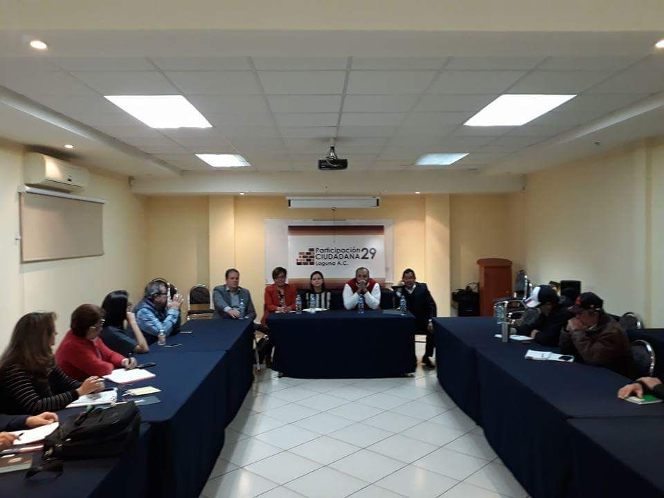

Comunicado de Prensa.
Se reune CPC Coahuila con integrantes Participación Ciudadana 29
Sistema Anticorrupción del Estado de Coahuila. Consejo de Participación Ciudadana.
Torreón, Coahuila.- Los integrantes del Consejo de Participación Ciudadana del Sistema Anticorrupción del Estado de Coahuila estuvieron en una primera reunión con miembros de Participación Ciudadana 29 en la ciudad de Torreón, el pasado lunes 22 de enero de 2018.
En una sesión informativa, Manuel Gil, presidente del Consejo de Participación Ciudadana, así como los y las consejeras Ana Yuri Solís, Lourdes de Koster, Juan Adolfo Von Bertrab y Carlos Rangel, escucharon los planteamientos y las propuestas del grupo de ciudadanos que se dieron cita en esta sesión.
Alejandra Carmona, representante de Participación Ciudadana 29, dio la bienvenida a los consejeros y consejeras, para posteriormente iniciar con la lectura de preguntas sobre la operación y alcances del Sistema Anticorrupción de Coahuila.
En el encuentro que se llevó a cabo en las instalaciones de COPARMEX Laguna, se plantearon temas y exigencias por parte de los integrantes de Participación Ciudadana 29, entre los que sobresale la actuación de las autoridades en temas como la adquisición de deuda pública en Coahuila, las llamadas “empresas fantasma” y las implicaciones legales de estos y otros asuntos relacionados con el gasto público en la entidad.
El Consejo de Participación Ciudadana reconoció la necesidad de mantener cercanía con Participación Ciudadana 29, en un afán de establecer un vínculo y comunicación con el grupo ciudadano para en conjunto, fortalecer la ruta de acción en la erradicación de prácticas deshonestas en la sociedad.
